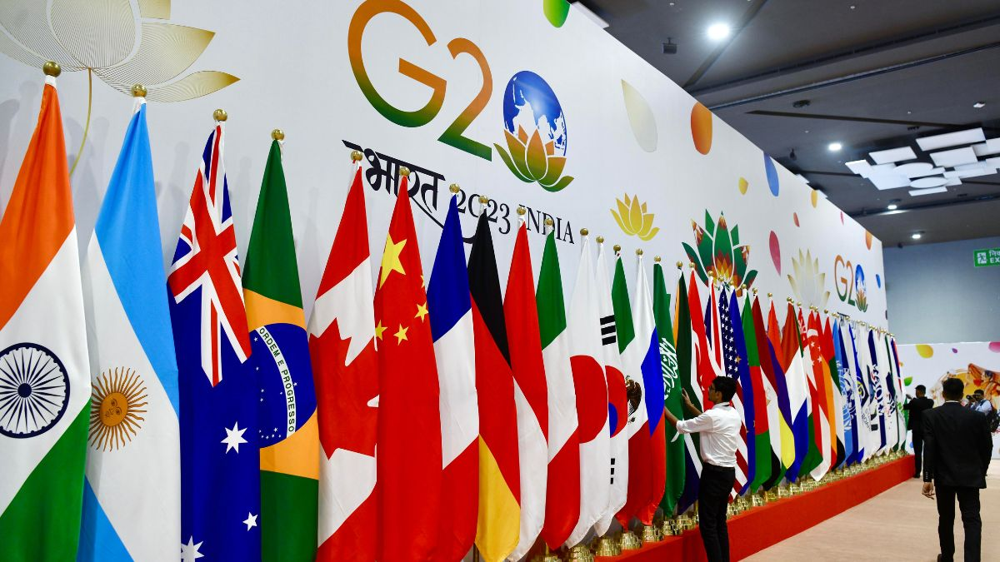

One earth is all about protecting home and haven. For the past few decades, we have been witnessing the very core of our planet, mother nature, turn against us in the form of climate change, which brings with it droughts, storms, wildfires and suffering.
But why, you may ask?
Well, the best way to answer the question is for you to look at your own life. In what ways do you negatively impact nature? How much waste do you produce each day? How much do you recycle? How much ends up in our oceans, only to kill its marine life? Now imagine this, but scaled up to the worlds staggering population - above 8 billion.
Our world has emmitted 36.44 billion tons of Carbon Dioxide, alone in 2019, and this number just keeps on increasing as we go on.
One future means ensuring everyone can prosper.
The future has never been so uncertain.
With the rise of new technologies, such as Artificial Intelligence, Quantum Computing and advances in Biotechnology, we have arrived at several ethical crossroads, and our future - Obscured. At the same time, climate change threatens our very existence. What will we do next? Racism, religious discrimination and inequity seem to be reaching extraordinary heights, with social unrest in every corner of the world.
A fair and inclusive future can depend on how the world's leaders and policymakers in this age of technological change handle the possibilities of digital growth. Consider the benefits of digital tax administration for revenue and compliance, increased transparency in online procurement for deterring corruption, and the social contract-strengthening responsibility of digital public financial management systems. An example of technology for inclusivity - India’s UPI (Unified payment interface) System. This technology pioneered in India is not only a technological marvel, but also holds up a beacon of hope for inclusivity - These payments can be made on even the legacy mobile phones that are used by the poorest of the poor in the furthest rural reaches of India, making sure that no one is left behind.
